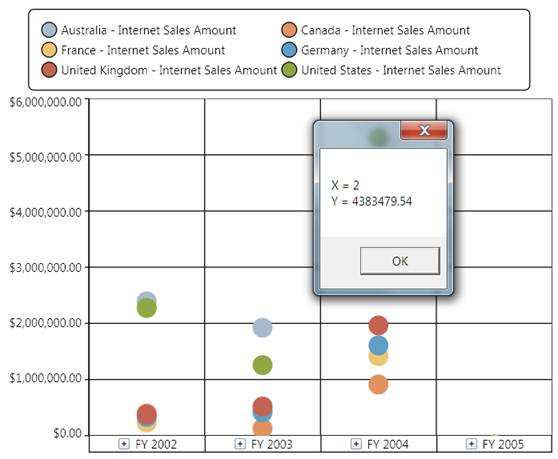

ChartMouseEventArgs are the arguments returned when the mouse events are triggered by the ChartSeries. ChartMouseEventArgs return the segment on which the mouse events are triggered along with the default mouse event args. This event args can be used to perform customization of a segment when a mouse event is encountered. The segment returns different values that can be used to perform calculations or operations.
The following code snippet demonstrates how the ChartMouseEventArgs can be used to retrieve information on the ChartSeries segment:
|
[C#] //// Event tagging this.olapchart1.Series[0].MouseClick += new ChartMouseEventHandler(series_MouseClick);
//// Mouse click event for a series. |
|
[VB]
' Event tagging AddHandler olapchart1.Series(0).MouseClick, AddressOf series_MouseClick
' Mouse click event for a series. Private Sub series_MouseClick(ByVal sender As Object, ByVal e As ChartMouseEventArgs) Dim point As ChartPoint = CType(e.Segment.CorrespondingPoints(0).DataPoint, ChartPoint) MessageBox.Show("X = " & point.X.ToString() & Constants.vbLf & "Y = " & point.Y.ToString()) End Sub
|

Figure 34:" Displays the Data Point obtained by using the ChartMouseEventArgs on a MouseClick
See Also